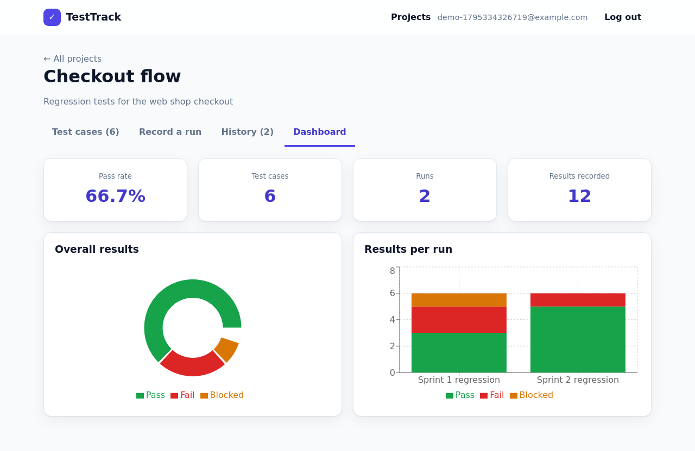
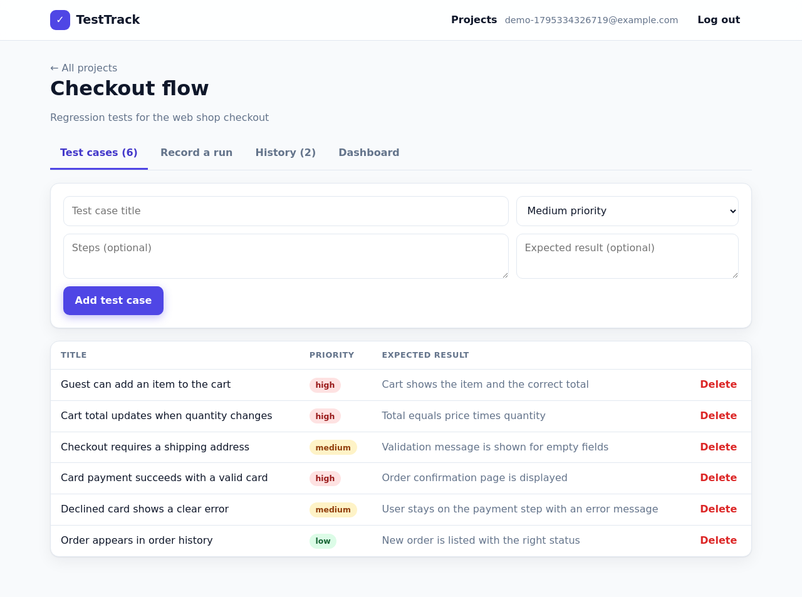

01 · Featured
TestTrack: Test Management Dashboard
A full-stack web application to organise test cases, record test runs and see pass-rate trends. Projects are private to their owner, and each run is saved in a single database transaction.
18 API tests and 7 browser tests run in GitHub Actions on every push.